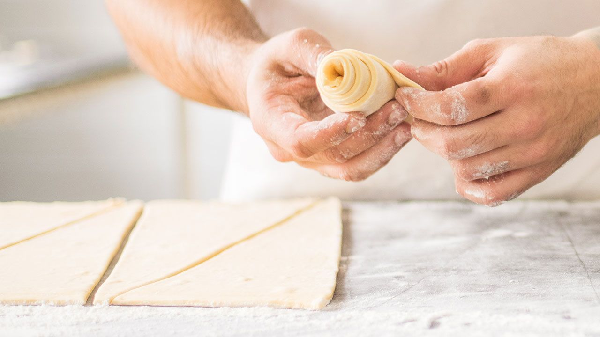
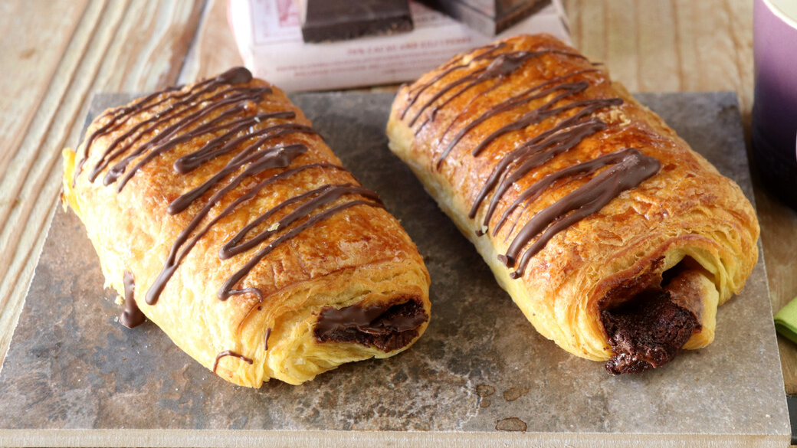
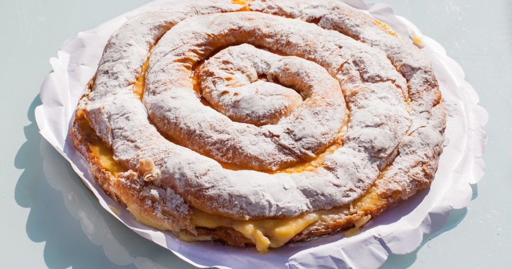
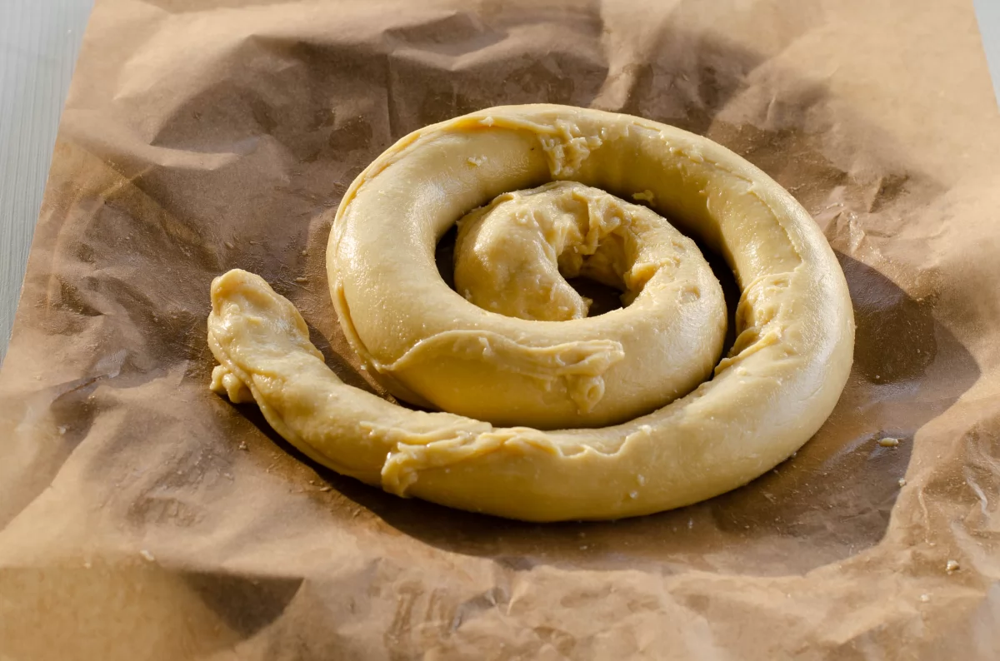
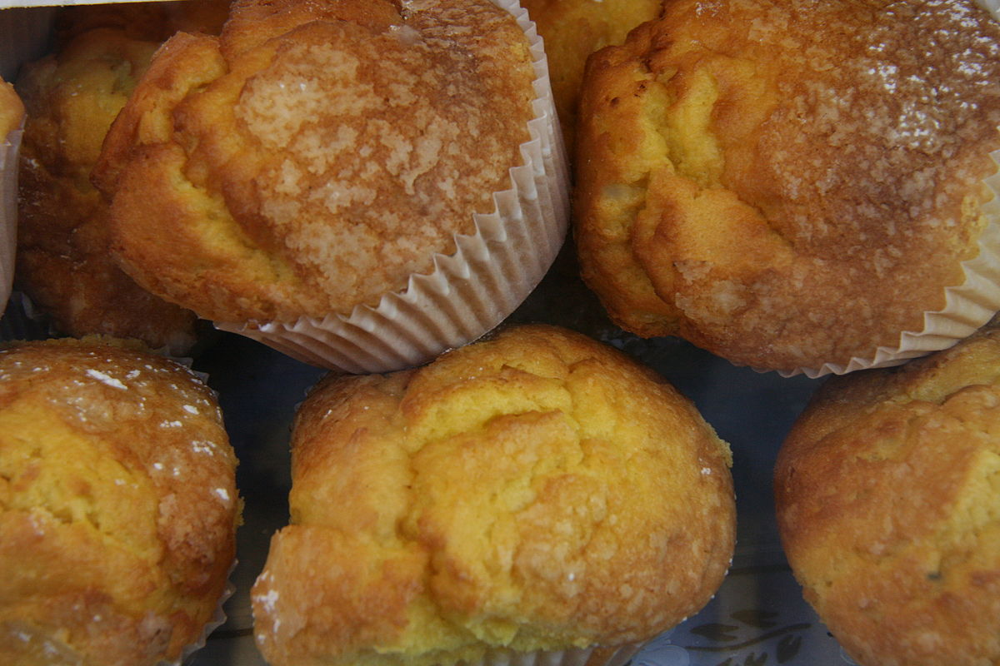
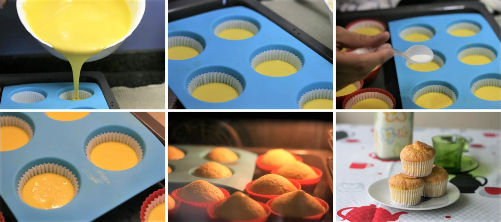
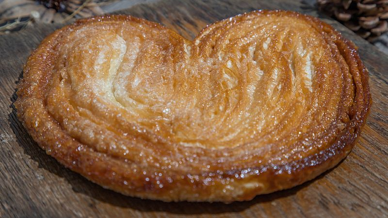
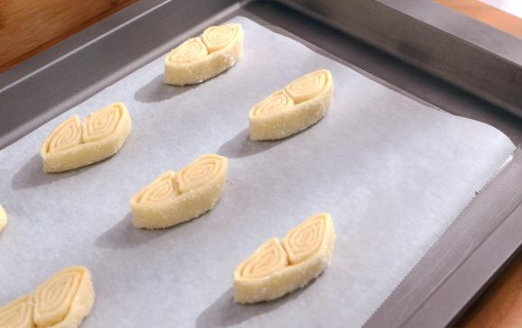

|
Mundo Pan |
Panaderia | Repostería | Pasteleria | Requisitos | Sobre Nosotros |
|---|
|
Mundo Pan |
Panaderia | Repostería | Pasteleria | Requisitos | Sobre Nosotros |
|---|

Croissant Receta para hacer croissants o cruasanes caseros, un bollo de mantequilla muy popular en todo el mundo. El croissant es perfecto para acompañar el desayuno o la merienda, o incluso para rellenar con ingredientes salados.El croissant también se conoce en algunos países como medialuna, cachitos, cangrejos o cuernitos. Se trata de un bollo de origen austríaco elaborado con masa de hojaldre, levadura y mantequilla. |
 |
Además, el croissant es muy versátil y se puede rellenar de ingredientes salados (embutidos, queso, vegetales...), perfecto para comer a media mañana o de merienda.
Ingredientes Levadura
250 gr de harina de fuerza o de panadería
75 gr de levadura fresca
125 ml de agua tibia
Ingredientes Masa
750 gr de harina de fuerza o de panadería
50 gr de azúcar
450 gr de mantequilla
30 gr de sal
agua (la que admita)
Para la levadura:
Mezcla bien los ingredientes y deja que fermenten hasta que se forme una masa similar a una esponja.
Para la masa:
Pon la harina sobre una mesa en forma de volcán, dejando un hueco en el centro. Coloca en el agujero 50 gr de mantequilla, azúcar y sal,incorporando el agua poco a poco hasta formar una masa más bien blanda. Amasa el conjunto durante 10 minutos como mínimo, hasta que adquiera una elasticidad adecuada. Añade la levadura, que tendrás preparada y fermentada, y sigue amasando el conjunto durante 10 minutos como mínimo, hasta obtener una masa lisa, homogénea y elástica. Dejar reposar la masa unos 10 minutos.
Coloca la mantequilla restante (400 gramos) sobre papel de hornear y tapa con otro trozo de papel de hornear. Aplasta la mantequilla con la ayuda del rodillo para que quede en forma de lámina alargarda.
Estira la masa
con ayuda de un rodillo, espolvorea con harina y pon encima de la masa la lámina de mantequilla. Sigue doblando los extremos de la masa hacia el centro varias veces, para después volver a estirar con el rodillo suavemente.
Dobla los extremos de la masa hacia el centro, tal y como se hace con la masa de hojaldre, como si se tratara de un sobre, y después estira la masa.
Deja reposar la masa un rato cada vez que lo dobles.
con el rodillo de modo que de ancho mida alrededor de 40 centímetros (de largo, lo que salga según la cantidad de masa que tengamos). Divide la masa en dos mitades con ayuda de un cuchillo. Después, corta triángulos que tengan unos 8 centímetros de base. Haz un pequeño corte en el centro de la base de cada triángulo, de modo que quede un poco abierto.
Enrolla
Enrolla los triángulos desde la base hacia la punta, ensanchándolos ligeramente.
Coloca los croissants en una bandeja de horno (con papel de horno) con la punta hacia abajo. Dobla los extremos un poco hacia el centro, dándole forma de croissant o media luna. Déjalos reposar el tiempo necesario hasta que doblen su tamaño.
Termina
Pinta la superficie de los croissants con huevo y hornéalos a 225ºC durante 10-15 minutos.
Disfruta
Mantenimiento de la masa
Si deseas preparar los croissants más tarde, puedes envolver el plastón de hojaldre en papel film transparente de cocina y conservarlo en el frigorífico hasta el día siguiente. En caso de haberlo tenido en el frigorífico, deberás repetir la operación de doblar y estirar dos veces más.
Una vez que ya tienen forma de croissant, envuélvelos en papel de horno y congélalos antes de que fermenten. Puedes conservarlos en un tupper o en una bolsa para congelados.
Napolitana Entre las muchas variedades existentes de bollería, en casa solemos elegir las napolitanas de chocolate para alegrar desayunos y meriendas, por lo que cuando estamos de antojo en casa las preparamos nosotros mismos, ya que siendo caseras nos aseguramos de saber lo que llevan y lo que no llevan. Al hacerlas nosotros, podemos elegir tanto el chocolate que ponemos en su interior, más o menos negro según las preferencias-, como el que utilizamos para la cobertura o decoración. Así conseguimos piezas de repostería mucho más saludables que las de la bollería industrial, aunque sigan siendo bollos calóricos para tomar solo en ocasiones. |
 |
Ingredientes (2 personas)
250 gr de harina de fuerza o de panadería
2 planchas de hojaldre refrigerado
Chocolate con leche o negro, según gustos (para el interior) 90 g
Chocolate de cobertura fundido 30 g
Almíbar 3 cucharadas
1 Huevo batido

Prepara:
Para hacer nuestras napolitanas de chocolate tenemos que hacer algunas elaboraciones previas, que servirán al finalizar para decorar la napolitana cuando la saquemos del horno. Por un lado, un glaseado o almíbar para cubrir las napolitanas y por otro un chocolate de cobertura fundido, que nos servirá para hacer el rayado con un movimiento de vaivén.
Para hacer el almíbar, ponemos 100 ml de agua en una sartén y añadimos 100 g de azúcar. Llevamos a ebullición sin remover y apagamos el fuego.
Para el chocolate de cobertura, fundimos el chocolate en el microondas en tandas de 45 segundos a 700w de potencia, removiendo entre tanda y tanda y repitiendo hasta que esté bien fluido.
Napolitanas
Para hacer las napolitanas, cortamos la plancha de hojaldre refrigerado en rectángulos de aproximadamente 12x7 cm y los colocamos extendidos sobre papel sulfurizado o un silpat, en la bandeja de horno.
A unos 4 cm del extremo, ponemos una tira de chocolate, doblando el hojaldre para envolverla. Después ponemos otra porción de chocolate y terminamos enrollando otra vez.
Barnizamos con huevo batido y dejamos que la masa fermente durante 15 minutos. Mientras, precalentamos el horno a 180ºC con calor arriba abajo sin ventilador.
Hornear
Pincelamos de nuevo cada napolitana con huevo batido y las horneamos a 180ºC hasta que la masa suba y veamos la superficie bien dorada, lo que tardará unos 10-12 minutos, dependiendo del tamaño, la cantidad de relleno y de cada horno.
Termina
Terminamos la elaboración, pincelando las napolitanas con el almíbar y decorándolas después con un vaivén de chocolate de cobertura fundido. Si lo preferimos, en lugar de con chocolate fundido, también podemos decorarlas con virutas o pelitos de chocolate o con crocanti de almendras, ingredientes que se quedarán pegados con el glaseado y que también gustarán mucho a todos.
Disfruta
Ensaimada Los que nunca habéis probado la ensaimada de Mallorca no sabéis lo que os estáis perdiendo, por eso si queréis saborear esta deliciosa receta tradicional de la gastronomía balear tan famosa por su sobrasada, os voy a explicar cómo prepararla en casa. Os aseguro que vale la pena invertir el tiempo necesario de levado para poder disfrutar de esta masa enriquecida. El nombre de ensaimada deriva del término "saïm", que significa manteca, así que ya os podéis hacer una idea de la cantidad tan exagerada que lleva la receta de este ingrediente. Buenísima sin más o con un relleno de cabello de ángel casero. |
 |
Ingredientes (6 unidades)
Harina de fuerza 400 g
Levadura prensada 15 g
Huevos 1
Agua 150 g
Azúcar 120 g
Sal un pellizco
Manteca de cerdo
Azúcar glas para espolvorear
Prepara:
Empezando calentando ligeramente el agua, la ponemos en un bol y deshacemos en ella la levadura. En un bol grande ponemos la harina y añadimos el agua con la levadura, el huevo batido, el azúcar y la sal. Amasamos quince minutos o hasta que consigamos una masa lisa.
Amasar
Hacemos una bola, la ponemos en un bol untado con aceite y dejamos que doble de volumen, como mínimo una hora.
La amasamos para sacar el aire y la dividimos en seis partes. Amasar cada una de ellas y estirarlas mucho con ayuda de un rodillo.
Cuando estén bien estiradas, las untamos muy muy generosamente con la manteca de cerdo, debemos ser generosos a la hora de formar esta capa de manteca sobre la masa. Estiramos con las manos para que la masa quede bien fina, puede ser que se rompa pero no pasa nada. Enrollamos formando un rulo con cada porción.
Reposo
Dejamos reposar los rulos hasta que la masa pierda nervio, lo ideal es una hora. Después estiramos los rulos para que queden lo más finos posibles.
Forramos dos bandejas de horno con papel de hornear y realizamos una espiral sobre ella con cada porción.
Debemos dejar espacio entre las curvas de la espiral, para que al levar la masa no se monte, debe quedar una ensaimada plana no subida.
Hornea
Guardamos las dos bandejas en el horno con una taza de agua y dejamos levar las ensaimadas toda la noche o unas 10 horas. Este paso es muy importante, porque las ensaimadas deben fermentar con lentitud para que queden bien.
Pasado este tiempo, calentamos el horno a 200ºC y las cocemos unos 10-12 minutos. Una vez frías se espolvorean con mucho azúcar molido.Disfruta
Magdalena Una magdalena recién salida del horno, bien esponjosa y con su copete sobresaliendo de la base envuelta en el papel rizado, una imagen a la que es difícil resistirse. Dentro de las recetas de postres del blog esta receta es la que más triunfa y es porque está al alcance de todos. La receta de magdalenas caseras es muy sencilla y nos tendrá poco tiempo en la cocina. En tan solo media hora podemos elaborar una rica hornada. |
 |
Ingredientes (6 unidades)
3 huevos
200 g. de harina floja de repostería
125 g. de azúcar blanco
50 ml. de leche entera
100 ml. de aceite de oliva extra virgen suave
½ sobre de levadura química (10 gramos)
Moldes de silicona para magdalenas (opcional)
Moldes de papel rizado para magdalenas
Una pizca de sal
Preparacion:
Vamos a preparar unas 20 magdalenas, perfectas para desayunar durante unos días. En un bol grande batimos los huevos con unas varillas, con movimientos rápidos y envolventes. Siempre procurando que nos quede el batido esponjoso y aireado.
Añadimos ahora poco a poco el azúcar mientras seguimos batiendo y mezclando de la misma manera. Toca el turno del aceite, lo vertemos despacio y lo vamos mezclando con el resto de ingredientes. Seguimos el mismo proceso con la leche, luego la harina, una pizca de sal y finalmente la levadura química. Metemos la mezcla en el frigorífico y mientras se enfría.
Colocamos los moldes de silicona sobre la bandeja, e introducimos el papel rizado dentro de ellos. Antes de verter la mezcla en los moldes, le damos una pequeña batida ya que con el frío se habrá espesado un poco.
Horneado
Precalentamos el horno a 220º C con temperatura arriba y abajo sin aire.
Llenamos hasta ¾ partes y le echamos un poquito de azúcar arriba del todo (opcional). Bajamos la temperatura a 200º C y horneamos 15 minutos en la bandeja central de vuestro horno, a esta temperatura las magdalenas deben de subir sin problema. Su estado idóneo es cuando comprobamos que están con el copete perfecto y doraditas. Este punto es importante ya que sabéis que de un horno a otro pueden variar el calor y el tiempo.
Pasado el tiempo, retiramos del horno. Dejamos reposar dentro de los moldes de silicona, para que asiente bien la masa. Y ya tendremos nuestras deliciosas magdalenas, ¡a comer!
Palmera Supercrujientes y recubiertas de azúcar, las palmeras, también llamadas lentes, son un bocado irresistible que gusta tanto a los pequeños de la casa como a los mayores. Si siempre has comprado estas pastas en la pastelería o en el horno y nunca te has atrevido a hacerlas, aquí tienes una receta, de esas que salen bien a la primera, que te conquistará. |
 |
Ingredientes
3 laminas de Hojaldre
2 Huevos
150 g. de azúcar blanco
Extiende el Hojaldre
Deja el hojaldre fuera de la nevera 5 minutos. Extiende una plancha sobre una hoja de papel de horno y espolvoréala con azúcar. Pasa el rodillo por encima, sin presionar demasiado, para que el azúcar se quede adherido. Dispón encima otra plancha, repite la operación y haz lo mismo con la tercera.
Haz un rulo con la masa
Marca el centro de la masa, a lo largo, y dobla los lados largos hacia el centro. Espolvoréala con más azúcar y dobla de nuevo. Por último, une ambos lados para formar un cilindro. Déjalo unos minutos en la nevera. Forra la placa con papel sulfurizado. Precalienta el horno a 180º.
Corta Las palmeras
Parte la masa en rodajas de 1/2 centímetro de grosor y colócalas en la placa, bien separadas entre sí porque aumentarán de tamaño.
Hornealas
Píntalas con el huevo batido y espolvoréalas con más azúcar. Hornéalas 8 minutos, dales la vuelta y prosigue la cocción 8 minutos. Déjalas enfriar y sírvelas.
| Pagina web hecha por Rubén Calomarde y Daniel Mora |
|---|